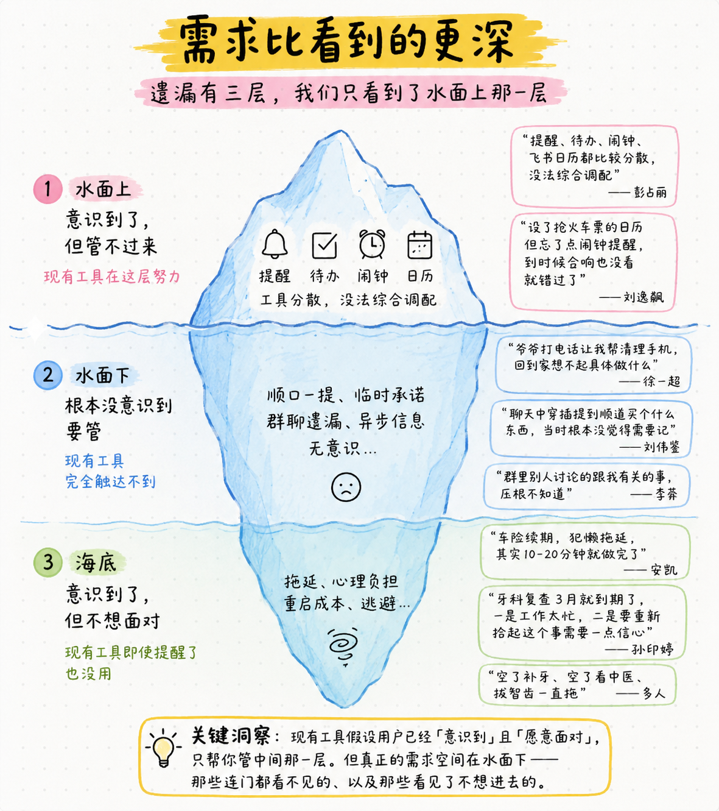
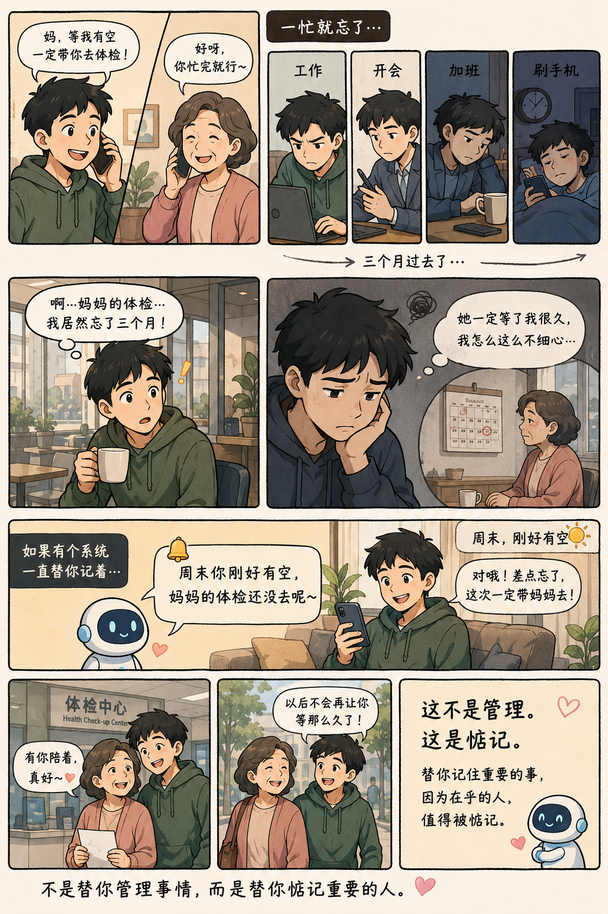

2026.05.08
「答应女儿贴车贴拖了一个多月，几次之后就忘了」——李堃
「回到家记得是关于手机的事，但想不起具体做什么」——徐一超
「妈妈说帮家里买东西，我经常忘，每次都是她问起来才想起」——卡拉
「甲状腺复查每三个月一次，上次1月，一直惦记着没去做」——岳乐
生活是多线并行的，人会遗漏掉其中一些事——这是认知局限，不是个人问题。工作记忆容量有限（Miller 1956），注意力在任务切换中残留（Leroy 2009），大脑没有可靠的自我提醒机制（Einstein & McDaniel 2005）。
遗漏带来的不只是事情没做——是情绪上的懊恼、关系上的失信、实际上的损失。30人访谈中用户人均说出 5-8 条遗漏事项。→ 详细报告
规模：概念测试有用度均值 8.7/10（N=28），属必备型需求。人均说出 6 条「希望系统帮盯但现在没工具管」的事项，共 174 条。
遗漏有三层，我们只看到了水面那一层，但真正的需求空间在水面下

现有工具的共同假设是：用户已经「意识到」且「愿意面对」。它们只服务水面上那一层。真正的需求空间在水面下——这是结构性的空白。
| 维度 | 核心痛点 | 原声 |
|---|---|---|
| 被动 | 需要我先想到、先告诉它 | 「鸡肋，还是需要我主动去告诉它」 |
| 输入麻烦 | 交互重、散落多处 | 「备忘录全部乱写，今天写这明天写那」 |
| 提醒不靠谱 | 只响一次，响了没做就没了 | 「飞书提醒一遍忽略了就不会再提醒」 |
| 不够智能 | 没上下文、不能关联判断 | 「让它记了到时候也不提醒，再问说不知道」 |
| 只记不做 | 只提醒不执行 = 记事本 | 「只提醒不执行等于记事本，没本质区别」 |
「帮我管事」的需求真实存在、比现有工具看到的更深、且当前供给不足
这意味着——这里有一个大的、结构性的、未被满足的需求空间
参考：wanqing 访谈 · yueyue 访谈 · 梦馨访谈 · 孟岩对话韦青
这件事值得做，不只因为工具不好用——而是因为 AI 时代人变得更焦虑了：信息膨胀、欲望膨胀、事情永远做不完。AI 对人的正确回应，不是帮你做更多，是让你更平静。
这不是待办工具，是一个惦记系统。
它替你兜着生活里容易漏掉的事，让你不辜负在乎的人，也不辜负自己。

这不是管理。这是惦记。
盯事儿看见的不止是「你当下要做什么」，也要看到「什么正在被你遗忘」。重点发力四个方向：
| OPPO 一键闪记 | 盯事儿 | |
|---|---|---|
| 核心逻辑 | 「记」——按一下，帮你存好 | 「惦记」——不用按，自己发现 |
| 解决的问题 | 输入门槛 | 意识门槛 |
| 冰山位置 | 水面上 | 水面下 + 海底 |
| 场景叙事 | 我帮你记住了什么 | 你因此没有辜负谁 |
| 用户动作 | 主动按一下 | 不需要任何动作 |
数据来源：AI操作系统认知访谈 N=293
用户对 AIOS 的直觉就是"主动管家"
N=293 用户对 AIOS 的自由联想（Q4），高频词全部指向「帮我管事的人」，而非更强的搜索或更快的生成：
问及用 AIOS 做什么时，1/4 用户说出来的场景就是盯事儿
Q6+Q7 中，73/293（25%）的用户在描述 AIOS 想象时，说的就是「帮我管事/记事/盯事」：
「手动打开钉钉看会议待办，抄到备忘录、标优先级……现在只需要让AI来操作，我就不用动」
「希望它及时关注我之前没有完成的内容，帮我跟进工作进度」
「不只是前一天提醒的，前几周记录过但没完成的，它也会一直记得住，一直催着我完成」
Miclaw query 实际使用数据验证
按语义类别聚合后，管事/记事是除天气外的第一大需求类别：
| 语义类别 | 占比 | 包含 |
|---|---|---|
| 查天气 | 62.8% | |
| 管事/记事类 | 11.3% | 新建任务、查询日程、修改定时任务、生成待办、创建日程等 |
| 投资理财类 | 4.9% | 黄金价格、股票行情、基金查询 |
| 生成/创作类 | 3.8% | 思维导图、课堂笔记、会议纪要、报告 |
| IoT/智能家居 | ~2% | 控灯、音量、蓝牙、投屏、自动化场景 |
| 探索/了解系统 | 1.8% | 问你是谁、问你能做什么 |
0422-0428 一周 query 词频，8% 抽样。管事/记事类含 UI 触发的"新建任务"（6.2%），即使去掉仍有 5.1%，与投资理财持平。→ 完整 Top 50
至此：值得做。
需求真实 × 立意成立 × 时机正确 → 接下来：放在哪里？怎么做？
负一屏现在有问题吗？它适合承载盯事儿吗？
当前使用情况
| 23底 | 24底 | 25底 | 26.5 | |
|---|---|---|---|---|
| MIUI 日活 | 1.31亿 | 1.45亿 | 1.61亿 | 1.62亿 |
| 负一屏 DAU | 3022万 | 3138万 | 3416万 | 3215万 |
| 日活率 | 23.0% | 21.7% | 21.2% | 19.9% |
| 人均划入 | 3.07 | 3.27 | 3.28 | 3.30 |
| UV 点击率 | 25.3% | 27.0% | 27.1% | 28.3% |
存量健康、增量失速
· 日活率三年下滑 23%→20%，2026年绝对 DAU 负增长（-200万）
· 核心用户没问题：人均3.3次/天、次日留存46%、点击率28%
· 曝光总次数三年萎缩25%（3.87亿→2.88亿）——不感兴趣的人已经走了
适合承载盯事儿吗？
| 产品需要 | 负一屏 | 锁屏侧滑 |
|---|---|---|
| 独立专属感 | 满足（整屏） | 空间较小 |
| 高频可见 | 取决于习惯 | 满足（每次亮屏） |
| 主动去看 | 满足 | 满足 |
| 零历史包袱 | 扫一扫/付款码要保留 | 满足 |
「步骤最短，滑过去直接能看到，很多时候知道了就行」——李堃
结论：负一屏内容区适合承载盯事儿（保留快捷功能不动），锁屏侧滑做高频补充入口。
用户怎么看改动
已有信号（30人访谈，偏正面但样本有偏）：
· 42-53% 主动选择负一屏，理由「现在没啥用，正好替换」
· 底线清晰：扫一扫/付款码不能动
· 少数反对：「已经有使用习惯，打碎习惯不好」
局限：30人中大部分本身不怎么用负一屏，说「正好替换」没有代价。真正需要听的声音是：那些高频使用负一屏的人，他们能接受吗？
需要专项调研回答：
| 问题 | 建议方式 |
|---|---|
| 高频用户依赖哪些功能、依赖程度如何？ | 筛选负一屏 DAU 用户，定向访谈 5-8 人 |
| 内容区替换为盯事儿，保留扫一扫/付款码，能接受吗？ | 展示改造方案 mockup，收集反馈 |
| 内容区（资讯/天气/运动卡片）实际使用频率和态度？ | 逐项评价 |
| 如果给更有价值的替代内容，愿意牺牲什么？ | 取舍题：「如果只能保留2个功能，你选哪些？」 |